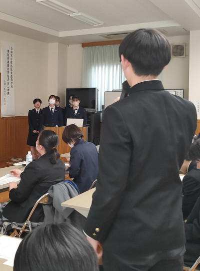
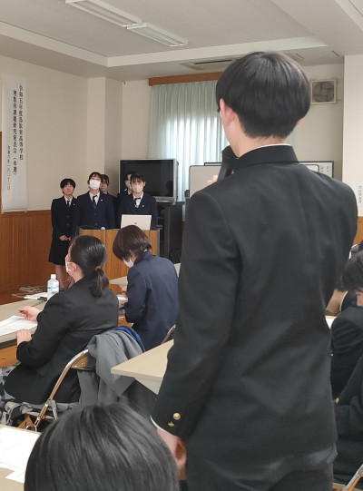

１年生 冬季高原教育【５】
2024年2月2日 12時50分昨夜から冷え込み、氷点下で最終日の朝を迎えた氷ノ山です。思ったほど

昨夜から冷え込み、氷点下で最終日の朝を迎えた氷ノ山です。思ったほど
昼から降り始めた雨は、午後からの実習が始まって間もなく雪に
朝方降っていた雨も止み、曇り空の下でスキー研修2日目午前の実
初日の夜。各宿舎で過ごす生徒の様子です。
１月31日（水）から２月２日（金）の２泊３日の日程で，わかさ氷ノ山スキー場へ向かいました。
令和５年５月２日付けの新型コロナウイルス感染症５類移行を踏まえ，鳥取県・米国バーモント州青少年交流事業が４年ぶりに再開されました。
選考の結果，本校２年生 石井さんが派遣者として選抜され，令和５年10月13日から12日間の米国異文化交流等を体験しました。今日は，石井さんからの報告と中学生のみなさんへのメッセージを掲載します。
令和６年１月23日（火）午後，本校理数科（２年生）課題研究発表会本選を開催しました。
本選には予選を通過した４つのグループが登場。それぞれが取り組んできた１年間の研究活動を踏まえ，その成果や気づき等についてプレゼンしました。この本選には，審査員として外部から専門家をお招きしただけでなく，１年生も参観。さすがに緊張感の漂う時間となりました。
窓の外は冬の山陰地方特有の曇天と肌を刺すような冷たい風。しかし本選会場では，理数科２年生の「科学する心」が溢れる熱い発表と白熱した質疑応答が展開されました。
 

アメリカ国立訓練研究所は，学習方法と平均学習定着率の関係を「ラーニングピラミッド」という図で表しています。同所の研究では，学習事項や学習内容の定着率を向上させる秘訣は学習者の能動的な学習にあることが示され，この図が示すとおり，内容をしっかり理解した上で「他の人に教える」ことは学習方法として有効な手立てであるとされています。
（出典：https://career-ed-lab.mynavi.jp/career-column/707/）
鳥取東高校はこのことに注目し，２年生有志が指導者（Teacher）となり，１年生希望者（Student）に集中的に教科指導を行う，通称「TSセミナー」を企画・実施しています。
鳥取東高校の３学期が本日，スタートしました。３年生は４日後に共通テストを控え，受験本番にいよいよ突入します。
12月17日（日），大和大学（吹田市）にて，西大和学園が主催する高校西大和模擬国連大会が開催されました。
この大会に近畿地方や中国地方から約100名の高校生が参集。鳥取東高校からは１，２年生希望者８名が参加しました。
〈大会イメージ〉 〈大会会場となった大和大学〉